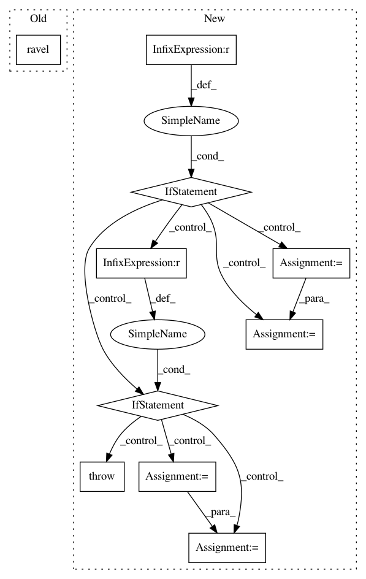

8b621a409cd07d0f5610a2648b6413322c39a822,GPy/likelihoods/likelihood.py,Likelihood,ep_gradients,#Likelihood#Any#Any#Any#Any#Any#Any#Any#,230
Before Change
Y_metadata_list.append(Y_metadata_i)
val = self.site_derivatives_ep(Y[index], tau[index], v[index], Y_metadata_i)
dlik_dtheta[:, index] = val.ravel()
f = partial(self.integrate)
quads = zip(*map(f, Y.flatten(), mu.flatten(), np.sqrt(sigma2.flatten())))
quads = np.vstack(quads)
After Change
Y_metadata_i[key] = Y_metadata[key][index,:]
Y_metadata_list.append(Y_metadata_i)
if quad_mode == "gk":
f = partial(self.integrate_gk)
quads = zip(*map(f, Y.flatten(), mu.flatten(), np.sqrt(sigma2.flatten()), Y_metadata_list))
quads = np.vstack(quads)
quads.reshape(self.size, shape[0], shape[1])
elif quad_mode == "gh":
f = partial(self.integrate_gh)
quads = zip(*map(f, Y.flatten(), mu.flatten(), np.sqrt(sigma2.flatten())))
quads = np.hstack(quads)
quads = quads.T
else:
raise Exception("no other quadrature mode available")
// do a gaussian-hermite integration
dL_dtheta_avg = boost_grad * np.nanmean(quads, axis=1)
dL_dtheta = boost_grad * np.nansum(quads, axis=1)
// dL_dtheta = boost_grad * np.nansum(dlik_dtheta, axis=1)
else:
In pattern: SUPERPATTERN
Frequency: 3
Non-data size: 10
Instances
Project Name: SheffieldML/GPy
Commit Name: 8b621a409cd07d0f5610a2648b6413322c39a822
Time: 2017-08-10
Author: akash.dhaka@aalto.fi
File Name: GPy/likelihoods/likelihood.py
Class Name: Likelihood
Method Name: ep_gradients
Project Name: SheffieldML/GPy
Commit Name: ed3f6c56c22a7fafa4aa7e4aefd2639e00c0a668
Time: 2017-07-03
Author: akash.dhaka@aalto.fi
File Name: GPy/likelihoods/likelihood.py
Class Name: Likelihood
Method Name: ep_gradients
Project Name: AIRLab-POLIMI/mushroom
Commit Name: f2cfa5fb8e73229a1757acbcc94bab13099de439
Time: 2017-06-05
Author: carlo.deramo@gmail.com
File Name: PyPi/utils/spaces.py
Class Name: MultiDiscrete
Method Name: get_idx